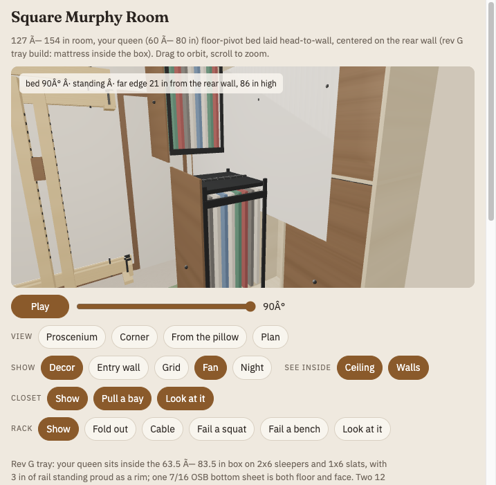

Closet Wall Build
Concept B as revised by the whole-room review of 23 Nov: a 20 in deep plywood carcass on the entry wall past the door, eight bays, seven of them with a clothes rod that pulls 24 in into the room on drawer slides, a cubby row on top, and the projector screen painted across the doors. Build steps C1 to C5 are in the tutorial (steps 20 to 24); see it move in the room model under Closet. 24 Nov 2026.

1. What it is
- Entry wall from the door casing (33 in from the left wall) to the right wall: 92.5 in wide, 20 in deep, 107.5 in tall in three pieces: a 3.5 in 2x4 base, a 90.75 in main carcass (so every panel comes out of a 96 in sheet and the box is built standing, since a one-piece 104 in box has a 110 in diagonal and cannot be tipped up under the 108 in ceiling), and a 13.25 in cubby box set on top.
- Four 23 in columns. Lower row 52 in tall, upper row 36 in tall with its rod at 90 in so a 6 ft reach gets it, cubby row 13 in with four hinged doors.
- Seven bays carry a 20 in rod of 3/4 in EMT on a thin 1x2 frame that rides on two pairs of 24 in full-extension slides, one pair per divider, mounted vertically so the bay's bending goes through each slide the strong way (about 25 lb per slide). The racks carry no door. Nine hangers at 2 in pitch per bay, about 63 garments.
- The doors are shoji-style sliding panels in a separate layer in front of the bays: 1x2 frames skinned with painted canvas, four per row in two lanes on waxed 1x2 tracks top and bottom of each row, including the cubby row. Slide a panel over its neighbour and the bay beside it is open; the rack behind then pulls out on its own. Panels and racks never touch.
- The eighth bay, lower column 4, holds the flat bench standing on end so the door-to-bathroom aisle stays 31.75 in with the bed down.
- The back is lagged into every stud at the shelf line and the top line, ten 3/8 x 4 in lags. The whole closet face is primed and painted flat white edge to edge, a matte screen white (Behr Ultra Pure White flat, or a screen paint for more gain); the projector lands on it between 42 and 87 in, 43 to 123 in from the left wall.
2. Cut list
| Part | Stock | Qty | Size | Notes |
|---|---|---|---|---|
| Base rails | 2x4 | 2 | 92.5 in | toe-kick ladder with three 16 in cross pieces; carcass bottom screws to it |
| Back | 7/16 OSB | 2 sheets + strip | two 48 x 90.75, one 4.5 x 90.75 ... make it two 46.25 x 90.75 from the same two sheets | screwed to the base and every divider edge every 8 in; lag holes at the shelf and top lines over each stud |
| Bottom and top | 23/32 BC plywood | 2 | 19.5 x 92.5 | top is the cubby box's floor as well |
| Dividers | 23/32 BC plywood | 5 | 19.5 x 89.25 | on 23 in centres; the outer two are the sides |
| Mid shelf | 23/32 BC plywood | 1 | 19.5 x 91 | at 56.5 in, in four 22.4 in pieces between dividers if easier |
| Cubby box | 23/32 BC plywood | 1 sheet | two 19.5 x 92.5, four 19.5 x 11.75, back strip 13.25 x 92.5 from 7/16 | built flat, set on top |
| Bay frames | 1x2 pine | 7 | two 48 in uprights and one 19.5 in top bar each (lower bays), 32 in uprights for the upper row | pocket or butt screwed; the slides mount to the uprights |
| Rods | 3/4 in EMT | 7 | 18 in | two 10 ft sticks; one two-hole strap each end under the top bar |
| Slides | 24 in full-extension, 100 lb | 14 pairs | two pairs per bay, mounted vertically on the divider faces 2 in from the front and 2 in from the back | |
| Sliding panels | 1x2 frames, canvas drop cloth skin | 12 | 22.6 x 51.5 (4), 22.6 x 35.5 (4), 22.6 x 11.75 (4) | one cross rail each, canvas stapled on the back, painted flat white; even columns in the back groove, odd in the front |
| Tracks | 1x2 with two 1/4 in grooves | 6 | 92.5 in | top and bottom of each of the three rows, waxed |
| Fasteners | ten 3/8 x 4 lags, 5 lb of 1-5/8 in screws, 1 lb of 5/8 in slide screws, glue, staples, paraffin wax, primer, flat white; no knobs, no hinges |
Sheet count: five 23/32 BC plywood (bottom, top, five dividers at two per sheet, shelf, cubby box) and two 7/16 OSB (back and cubby back); the panels are canvas on 1x2, not sheet. Cheaper and reclaimed alternatives are in sections 5, 7 and 8.
3. Numbers (from the whole-room review)
| Check | Result |
|---|---|
| Carcass weight | about 400 lb in OSB (about 580 in 3/4 ply) plus 200 lb of clothes; 0.4 psi on the slab through the base |
| Tipping | one pulled bay is about 50 lb at 16 in past the face, 800 lb-in; the loaded carcass resists about 7,800 lb-in on its own; ten lags at about 450 lb each cover every bay out and a person climbing it |
| Slides | vertical mounting: about 25 lb per slide in its strong axis, screw tension about 17 lb. Flat mounting would have put 400 lb-in through each slide's weak axis, which is why valet rods are rated 15 lb |
| Reach | upper rod at 90 in; a 6 ft person reaches about 88 in flat-footed and 90 on tiptoe; the cubby row needs the stool |
| Walkways, bed down | 31 in from the closet face to the bed foot; 31.75 in down the left aisle to the bathroom with the bench in its bay; one bay can be pulled from the side with the bed down |
| Bed up, rack out | columns 3 and 4 pulled overlap the racked bar's plates by 7 in: never both at once |
| Egress and electrics | the window stays the egress; the light switch and any receptacle behind the carcass get a cut-out and a removable panel; confirm the entry door's hinge side before building, a right-hinged leaf lies 1.5 in from the carcass side |
4. Build order
- Mark studs, find the switch and receptacles, confirm the door hinge side. Build the 2x4 base and set it against the wall.
- Back on the base, then bottom, dividers, mid shelf, top, all standing in place. Lag through the back into the studs at the shelf and top lines.
- Cubby box built flat, lifted on, screwed down. Doors and knobs.
- Slides on the divider faces, frames on the slides, rods in straps. Ten pulls each.
- Tracks on, twelve canvas panels in their grooves, primed and painted flat white. Load it. Bench into its bay.
5. Cost, simplifications and sourcing
Three honest tiers. The full pull-out version is what the model shows. The cheaper two keep the carcass and drop slides, which a reviewer rightly pointed out are the only expensive part: 20 in is a normal closet depth and a fixed rod is reachable, so the slides buy convenience, not storage.
| Line | Tier 1: full pull-out (as modeled) | Tier 2: slides on the three coat bays only | Tier 3: fixed rods, hinged doors |
|---|---|---|---|
| 23/32 BC sanded pine plywood, 5 sheets (dividers, shelves, top, bottom, cubby box): Home Depot S OKC $29.54 a sheet, only $4 over OSB and it holds slide screws, so no cleats | $148 | $148 | $148, or $90 from the $18 Marketplace maple sheets |
| 7/16 OSB, 2 sheets (back and cubby back): $10 a sheet on Marketplace | $20 | $20 | $20 |
| Sliding panels: 1x2 for twelve frames and six tracks (about 30 sticks), a 9 x 12 canvas drop cloth, staples, wax | $75 | $75 | $75 |
| 1x2 pine for the bay frames | $15 | $8 | $0 |
| 2x4 base, three at $3.45 | $10 | $10 | $10 |
| 22 in full-extension soft-close slides (Pride, Marketplace, $15 a set, multiple sets available; two sets per pull-out bay) | 14 sets, $210 | 6 sets, $90 | $0 |
| Rods: two 10 ft sticks of 3/4 in EMT at $12.72, a 20-pack of one-hole straps $8.78 | $34 | $34 | $34 |
| Hinges and knobs | $0 | $0 | $0 |
| Lags 3/8 x 4 (10 of a 25-pack $19.98), 5 lb of 1-5/8 screws, slide screws, glue | $55 | $55 | $50 |
| Kilz 2 primer 1 gal $23.98, one gallon of flat white (Behr Ultra Pure White flat about $35, or a screen paint at $60 to $90 a quart), filler | $65 | $65 | $65 |
| Total | about $620 | about $500 | about $400, or about $340 with Marketplace plywood; tier 4 in section 7 is about $165; the all-cardboard-skin shoji tier in section 8 about $215 to $270 |
What the research settled:
- Dividers in 23/32 BC sanded pine plywood. The research pass priced sanded ply at $70 and would have pushed the carcass to OSB with glued cleats under every slide; the live store check found BC pine at $29.54, $4 more than OSB subfloor, and plywood holds a slide screw on its own. Five sheets, $148. OSB stays for the back and the doors, where nothing screws into it but the lags and the knobs.
- EMT conduit for every rod. About $5 a rod installed against $16 for a wood pole with sockets and $18 to $20 for steel pipe.
- Doors from 7/16 OSB, about $3.50 a door, the whole face painted flat white. If the strand texture shows in the picture, a 1/8 in hardboard skin over the 80 x 45 in zone only, about $15, fixes it. Not a whole-wall skin.
- Reclaimed: hollow-core door slabs from the ReStore ($25 to $50, 1-3/8 in, 24 to 32 in wide by 80) work as applied door faces screwed through their stiles, never as dividers or slide mounts, since the honeycomb core holds no screw. Used kitchen cabinet doors ($5 to $20) rarely match 22 in without trimming. IKEA PAX panels are laminate that will not repaint and never come as a matched set of eight; skip them.
- A curtain instead of doors on a tension rod is about $25 and zero carpentry; it costs you the painted screen and lets dust in. Worth it only if the projector moves elsewhere.
- The single biggest saving is slides. Fixed rods at 20 in deep are a normal closet; the pull-out is what makes a bay feel like a walk-in. Tier 2 keeps it where it matters, coats and jackets in the lower row. The Marketplace Pride sets at $15 are soft-close full-extension 22 in, which is what the design needs; buy them before they go.
6. Live listings
Opened live 24 Nov, 00:25. Local unless noted.
7. Cardboard, NightHawk's method, reviewed by Fable (24 Nov)
What the method is. NightHawkInLight, "Learn to Build With Cardboard! STRONG, Waterproof and Free" (2025): cross-laminate corrugated sheets at 90 degrees with wheat paste (flour to water 1:5), glue then trim, fold the facing over cut edges, put wood wherever a fastener or a point load lands, keep cardboard in tension, size the surface with paste; weatherproof with a shellac and beeswax paste in alcohol. He used it as a camper roof. It is a technique video, not an engineered material: no strength or fire numbers are given.
| Property, 3/4 in cross-laminated corrugated versus 23/32 plywood | Cardboard laminate | Plywood |
|---|---|---|
| Bending stiffness | about 1/20 to 1/30; it takes about 2 in of laminate to match 3/4 in ply | 1 |
| #8 screw pull-out from the face | 10 to 25 lb, and it crushes with cycling | 250 to 350 lb |
| Weight | 0.5 to 0.7 lb per sq ft | 2.2 lb per sq ft |
| Humidity | paper loses 20 to 30 percent of its stiffness at 65 percent RH and creeps under a steady load; a 23 in shelf with 15 lb on it sags visibly within an Oklahoma summer | negligible |
| Fire | ignites in seconds from a match or a hot wire; the wall is on the egress door and the room has a 30 A supply and a projector. A borax and boric acid soak, about $14, makes it char instead of flame; the method does not include it | chars at about 1.5 in an hour |
Where cardboard is defensible: door faces as a skin on a 1x2 frame; the cubby box as a torsion box; shelves as skins on 1x3 edges with nothing hanging from them. Where it is not: the dividers (every slide screw needs 2.5 in of real wood), and the back as structure (a 1x4 ledger at each lag line with cardboard infill between). Mount the supply, fuses and projector on wood or steel, never on paper.
| Cheapest sound cardboard closet, full pull-out | Cost |
|---|---|
| 1x3 furring, 28 sticks: divider frames, shelf and top edges, cubby | $76, or about $20 from the pergola pile |
| 1x2, 24 sticks: twelve door frames, seven rod frames | $36 |
| 1x4 ledgers, three, lagged into the studs | $12 |
| 2x4 base | $8 or free |
| Cardboard, about 1,600 sq ft, 40 to 50 appliance boxes | $0 |
| Wheat paste, 25 lb of flour; borax and boric acid | $26 |
| Primer and flat white, two gallons (cardboard drinks paint) | $50 |
| 14 slide sets, used | $210 |
| 3/4 EMT, two sticks; lags, screws, glue | $54 |
| Total | $472, about $415 with a free skeleton |
Against the $630 plywood pull-out that is a $160 saving at best, because the sheet goods were only $188 of the closet; the slides are the cost. The $375 used-maple plywood tier beats the cardboard version with bought lumber.
Three simplifications that save more than cardboard does:
- Fixed rods, no slides: saves $210, adds $36 of hinges, net about $175 off. The screen survives on flat hinged faces.
- No doors at all: one 9 x 12 ft canvas drop cloth on a top batten, painted flat white, in front of open bays. Saves the twelve doors, their frames and hinges, about $80, adds $40 of cloth and paint, net $40 off, and the screen improves: no seams, no door gaps.
- Three columns, 69 in wide: saves a divider, two doors, four slides and two rods, about $60 fixed or $120 pull-out; the screen shrinks to 69 in. Dropping the cubby row instead saves about $40.
Tier 4, the floor: all three simplifications plus cardboard skins on free lumber: 1x2s $36, paste and borax $26, EMT $22, fasteners $32, canvas and paint $40, base free, cardboard unpainted behind the cloth. About $165. Fixed rods in open bays behind a painted canvas, and the projector gets the best screen of any version.
8. Shoji version: cloth-skinned sliding panels, cardboard skins, fixed rods (24 Nov evening)
Your read is right on the doors and wrong on the racks, and the difference is where the load is. A door carries nothing but itself and a picture; a rack carries 50 lb of coats on a pivot. So: shoji-style panels, yes, as plain as they come; a closet made entirely of cardboard including expanding racks, no.
The screen material decides the skin. A projector needs an opaque matte white surface. Shoji paper and any thin paper are translucent: the light goes through, lights the clothes behind, and comes back grey, so contrast collapses. That rules out washi and tissue. What works, cheapest first: a white canvas drop cloth with one coat of flat white ($25 for 9 x 12 ft, enough for every panel); white blackout cloth, which is the standard home-cinema DIY screen fabric, about $6 a yard, eight yards; Tyvek house wrap, opaque and matte but printed on one side, $30 a roll; or 1/8 in hardboard painted, $15 a sheet, stiff but heavier. Painted canvas on a frame is the pick: it is the same thing a stretched artist's canvas is, it reflects like a 1.0 gain screen, and a seam between two panels is a 1/8 in line.
Panels like shoji, no lattice. Each panel is a 1x2 frame, 22.5 x 51.5 in for the lower row and 22.5 x 35.5 in for the upper, half-lapped or pocket-screwed at the corners with one cross rail, canvas stapled on the back and painted flat white on the face. About 2 lb a panel. They slide, not swing: two shallow tracks top and bottom, cut as grooves in 1x2 with a router or two 1/4 in strips glued to a 1x3, waxed. Two panels per track pair, four across, so sliding any panel opens the bay beside it, one at a time, the way a shoji room divider works. No hinges, no knobs, a finger notch. Closed, the row is one flat white plane 92 in wide for the projector. Cardboard laminate works for these frames too if you want zero lumber in them, two layers folded into a 1.5 in channel, but a 1x2 is $1.50 and does not creep.
Rods stay steel, racks stay fixed. An expanding or scissor rack in cardboard puts 30 to 50 lb through pivots the size of a pencil in a material that holds 10 to 25 lb on a screw and crushes with cycling; Fable's numbers from section 7 apply. A 20 in bay with a fixed 3/4 in EMT rod is a normal closet and needs no expansion. If you want a pull-out later without steel slides, a 1x3 drawer frame on waxed hardwood runners is about $5 a bay and carries the coats in wood.
Where cardboard carries the rest: divider and shelf skins over 1x3 ladder frames (torsion-box style, borax-soaked, paste-sized), the cubby box, and the back infill between the three 1x4 ledgers that take the stud lags.
| Shoji tier, fixed rods, sliding cloth panels | Cost |
|---|---|
| 1x3 furring, 28 sticks: divider and shelf frames, cubby, tracks | $76, or about $20 from the free pile |
| 1x2, 24 sticks: eight panel frames and track strips | $36 |
| 1x4 ledgers, three; 2x4 base, two | $20 |
| Cardboard, 40 to 50 appliance boxes; wheat paste; borax and boric acid | $26 |
| 9 x 12 canvas drop cloth, staples, one gallon of flat white, paste-sized skins painted too | $60 |
| 3/4 EMT, two sticks, straps | $22 |
| Lags, screws, glue, wax | $32 |
| Total | about $270 with bought lumber, about $215 with the free 1x3s |
That is tier 4 with real doors: about $50 to $100 more than the single canvas curtain, and you can close a bay. Add $5 a bay later for wooden pull-outs. Bring the paper or cloth you have in mind and I will tell you its gain and whether light gets through it; a sheet held against a lit lamp tells most of it.